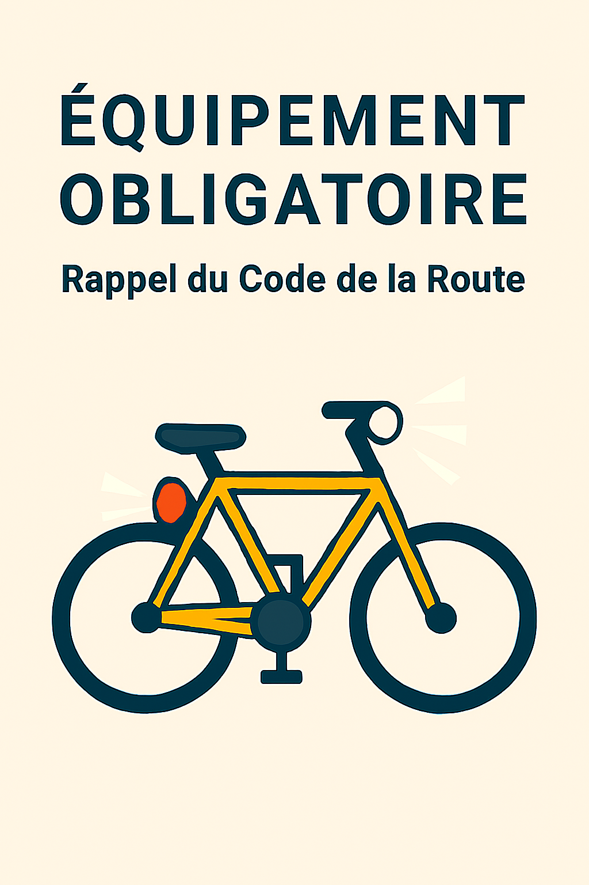

🔦 Équipements obligatoires (Code de la route)
- Feu avant : blanc ou jaune, non éblouissant.
- Feu arrière : rouge, visible à 100 m.(non clignotant)
-
Catadioptres:
- Avant (blanc)
- Arrière (rouge)
- Sur les roues (orange ou blanc)
- Sur les pédales (orange)
- Gilet rétro-réfléchissant
- Obligatoire hors agglomération, de nuit ou en cas de faible visibilité.